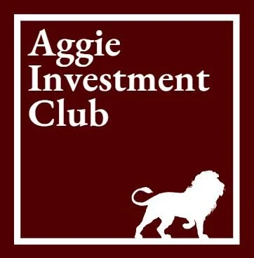
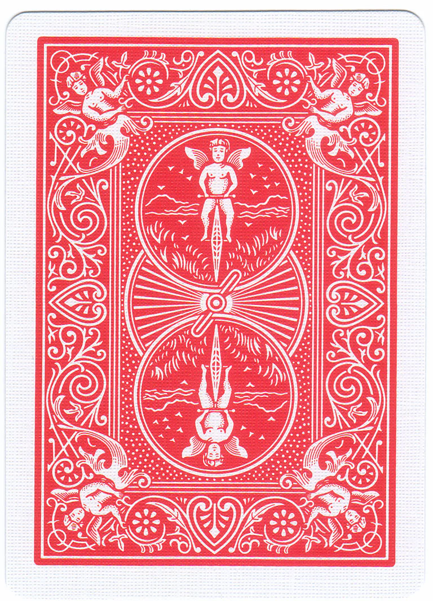

Quant Trading Model

As a member of the Aggie Investment Club (AIC) Quant, I am part of a group developing a novel quantitative trading model. Our project aims to make use of some more alternative data to go and make attempts at uncovering predictive signals not yet captured by traditional financial analysis. Primarily, we are integrating and processing more diverse, sentiment-based data, such as Amazon product reviews, volume and trend data from Google Trends, and TikTok comments for real-time sentiment extraction. This project has provided me with hands-on experience in matters such as data science, financial modeling, and system development.
Game Jams

Nearly every semester, I take part in the semester-long game jams hosted by the Texas A&M Game Developers. These extended jams provide me the perfect platform to move beyond theory and get my hands on iterating projects from concept to playable build. Usually, each jam has individuals working in small, multidisciplinary teams, attempting to tackle the entire pipeline, from initial brainstorming and core mechanic design to beyond, like programming, asset creation, and user experience refinement. It is an intensive, collaborative process that sharpens both my technical execution and creative problem-solving skills, even if I do not manage to finish the game in time for the jam submissions. Additionally, the jams have allowed me to gain further experience with game engines such as Godot, Unity, and Unreal.
Blackjack Terminal Game

Early on in college, my final project for ENGR 120 (Introduction to Engineering) was to create a basic game that would run using Python. My team created a terminal version of Black Jack, which would show ascii art of the cards in the player's hand. While not the most exciting, it still took time to figure out how to design it all in Python. Furthermore, as it was one of my first collaborative projects, it gave me a good view into how working in a team environment, rather than alone, works. As such, it gave me great experience in terms of working with others for programming and the workflow that is involved.